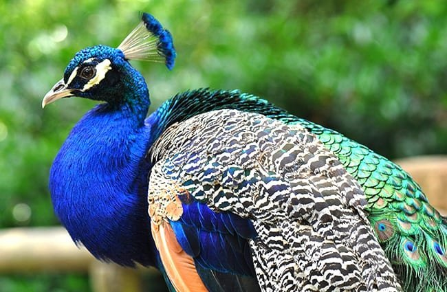
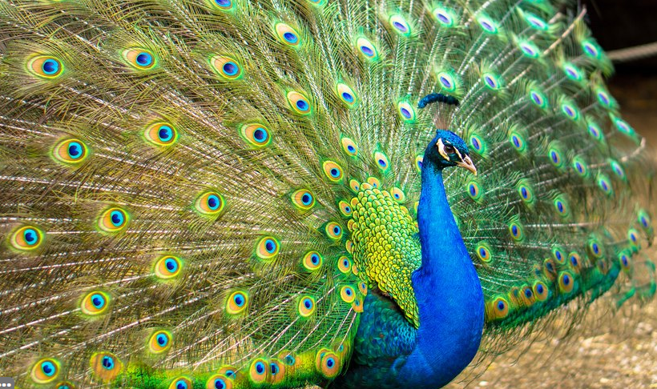

Peacocks are an omnivorous large bird species from India and Asia that are known for their colorful feathers. They have blue-colored necks and long bright green tail feathers that are dotted with eyespots. In rare cases, some peacocks have a genetic condition that can prevent their usual bright pigment to manifest, creating albino peacocks (white feathered). Peacocks are generally found in forest areas and their diet consists of insects, grain, berries and small animals.